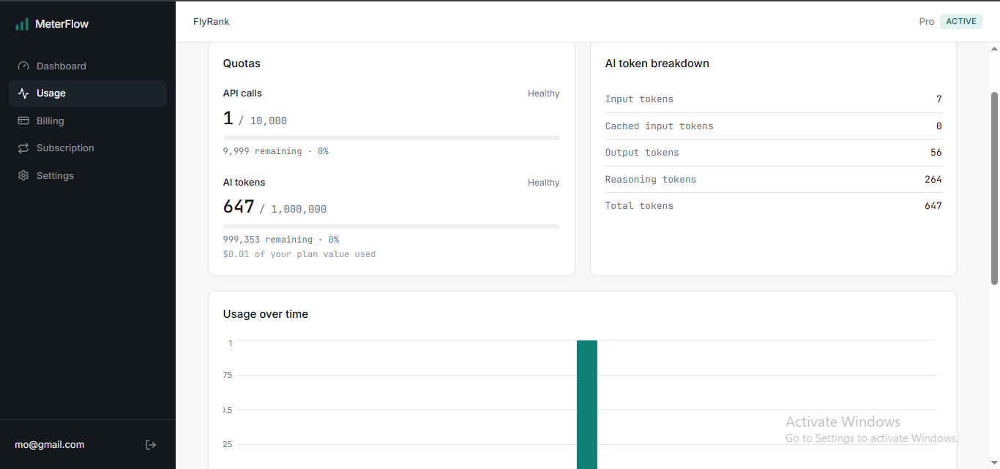
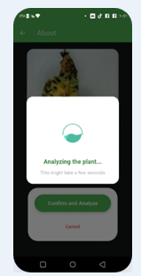
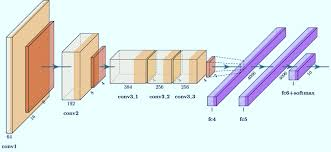

B.Sc. Computer Engineering
2020 – 2025Islamic University of Gaza, Palestine
GPA: 85.93% (3.5 / 4.0)
I build practical AI applications and integrate AI into backend systems, turning documents, workflows, and usage data into software that actually runs, using Python, FastAPI, LLMs, and RAG.
The accepted capstone project for a Backend AI Engineering internship. It shows how I think about correctness under concurrency, not just wiring up an API.
MeterFlow is a multi-tenant backend for usage-based SaaS billing. It tracks per-plan API and AI-token usage, enforces quotas in real time, and guarantees exactly-once usage recording even when the same request is retried concurrently, a common failure mode in metered billing systems.


A document-grounded study assistant: chat, quiz, flashcard, and summarize any uploaded PDF, Word file, or slide deck. A LangGraph agent routes between tools based on document size and user intent, switching to retrieval only when a document is too large for full context.

Trained the plant-disease classification models, a general CNN plus plant-specific sub-models, for this team-built Flutter app. Handled preprocessing, transfer learning, evaluation, and TFLite deployment for on-device inference.
A real-time face recognition pipeline for live video, served through a FastAPI backend: YOLOv8 for detection, FaceNet for embeddings, and FAISS for millisecond-latency similarity search, with PostgreSQL storing embeddings and identity metadata at scale.

Implemented and benchmarked ResNet, U-Net, VGG, and AlexNet on classification and segmentation tasks, with systematic hyperparameter tuning across custom and benchmark datasets.
I graduated with a B.Sc. in Computer Engineering from the Islamic University of Gaza in 2025. Since then I've focused on building AI applications and the backend systems that support them: mainly LLMs, RAG, and agentic workflows on Python, with earlier work in machine learning and computer vision.
What I enjoy is the part after "the model works": taking an AI capability and turning it into something a real system can rely on. That means deciding where AI actually helps, handling retries and edge cases, and weighing accuracy, cost, and latency instead of just accuracy alone.
I'm not chasing the newest framework for its own sake. I'd rather ship a system with clear failure modes than a demo that only works once.
Junior AI Engineer, AI Engineering internship, or AI backend engineering roles: anywhere I can keep building AI systems that hold up under real use.
No ratings, no percentages. Just the tools that show up across the projects above.
GPA: 85.93% (3.5 / 4.0)